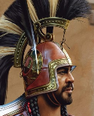
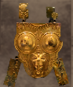

RTR: Imperium Surrectum
RTR: Imperium SurrectumRetinue — I
← all retinue · all traits · wiki index
29 retinue members whose name begins with I. A · B · C · D · E · F · G · H · I · J · K · L · M · N · O · P · Q · R · S · T · U · V · W · X · Y · Z
Iberian Aristocrat

never alongside Iberian Noble.Effects: +1 Law, +1 Training Units, +5 Tax Collection, +1 Combat vs Celtiberian, +1 Combat vs Iberian
This General has formed an alliance with an Iberian minor king or aristocrat that attended the assembly in the New City to represent his lands and interests of the Assembly. Is he a real friend? Is he a mere hostage? Or, does he have his own reasons to collaborate? It does not matter. His current influence, as ally, will be useful when issues related with tribute and contribution of soldiers arise in the assembly.
How it is gained — ending a turn in a settlement
| When | Chance | Conditions | |||||||||
|---|---|---|---|---|---|---|---|---|---|---|---|
| ending a turn in a settlement | 1% | belongs to Carthage · is a general · in the Iberian area of recruitment · over 90% of his movement left · Influence above 2 · Command 2 or more · 5% chance |
---
Iberian Auletris
unique — one in the world at a time · never alongside Iberian Auletris, Iberian Noble Wife.
Effects: +1 Influence, -1 Unrest
This noble woman belongs to one of the most respected lineages in the region. Like her mother before her, and her grandmother before her, wrapped in rich robes once woven in the bosom of her home, she accompanies local rites with the music of her aulos and sings of the deeds of her city's ancient heroes. This woman's knowledge of local memory and rituals could become a useful political tool if your stay in these lands is going to be a lengthy one.
Acquisition is tied to traits: Attuned Governor, Wealthy.
How it is gained — ending a turn in a settlement
| When | Chance | Conditions | When | Chance | Conditions | ||||||
|---|---|---|---|---|---|---|---|---|---|---|---|
| ending a turn in a settlement | 1% | Influence above 4 · in the Iberian area of recruitment · over 90% of his movement left · has Wealthy · has Attuned Governor · 5% chance (plus hidden conditions) | ending a turn in a settlement | 1% | Influence above 4 · in the Iberian area of recruitment · over 90% of his movement left · has Wealthy · 5% chance (plus hidden conditions) |
---
Iberian Auletris (Iberian auletrisb)
unique — one in the world at a time · never alongside Iberian Auletris, Iberian Noble Wife.
Effects: +1 Influence, -1 Unrest
This noble woman belongs to one of the most respected lineages in the region. Like her mother before her, and her grandmother before her, wrapped in rich robes once woven in the bosom of her home, she accompanies local rites with the music of her aulos and sings of the deeds of her city's ancient heroes. This woman's knowledge of local memory and rituals could become a useful political tool if your stay in these lands is going to be a lengthy one.
Acquisition is tied to traits: Attuned Governor, Wealthy.
How it is gained — ending a turn in a settlement
| When | Chance | Conditions | When | Chance | Conditions | ||||||
|---|---|---|---|---|---|---|---|---|---|---|---|
| ending a turn in a settlement | 1% | in the Iberian area of recruitment · over 90% of his movement left · has Wealthy · has Attuned Governor · Influence above 3 (plus hidden conditions) | ending a turn in a settlement | 1% | Influence above 4 · in the Iberian area of recruitment · over 90% of his movement left · has Wealthy (plus hidden conditions) |
---
Iberian Hostage
Effects: -1 Influence, +2 Law
Her father begged for mercy, but now his daughter belongs to me. It is the price of power. I have assured him that her dignity will be respected. In spite of that, many men will look upon her with desire. If her father remains loyal to us, his children will not be dishonored. But in case he tries to rebel, the most terrible fate will fall upon her.
How it is gained — ending a turn in a settlement
| When | Chance | Conditions | |||||||||
|---|---|---|---|---|---|---|---|---|---|---|---|
| ending a turn in a settlement | 1% | belongs to Carthage · is a general · in the Iberian area of recruitment · over 90% of his movement left · Influence above 2 · 5% chance |
---
Iberian Master Smith
 never alongside Master Smith, Master Metallurgist, Celtic Master Smith · never for 10 of the cultures.
never alongside Master Smith, Master Metallurgist, Celtic Master Smith · never for 10 of the cultures.
Effects: +1 Troop Morale, +1 Training Units
First among equals, this man is the best at craftsmanship in metallurgy, especially with weapons.
Acquisition is tied to the trait: Welcoming To Foreigners.
Cultures that never receive it (10)
Greek · Western Hellenistic · Eastern Hellenistic · Caucasian · Anatolian · Iranian · Arab · Indian · Egyptian · Ethiopian
How it is gained — ending a turn in a settlement
| When | Chance | Conditions | When | Chance | Conditions | When | Chance | Conditions | When | Chance | Conditions |
|---|---|---|---|---|---|---|---|---|---|---|---|
| ending a turn in a settlement | 2% | is a general · over 90% of his movement left · the settlement has Armourer (Industry) or better · in the Iberian area of recruitment · does not belong to Arverni · does not belong to Trinovantes | ending a turn in a settlement | 1% | is a general · over 90% of his movement left · the settlement has Armourer (Industry) or better · in the Iberian area of recruitment · has Welcoming To Foreigners · does not belong to Arverni · does not belong to Trinovantes | ending a turn in a settlement | 2% | is a general · over 90% of his movement left · the settlement has Awesome Temple or better · in the Iberian area of recruitment · belongs to Arevaci | ending a turn in a settlement | 2% | is a general · over 90% of his movement left · the settlement has Awesome Temple or better · in the Iberian area of recruitment · belongs to Arevaci |
---
Iberian Noble
never alongside Iberian Aristocrat.
Effects: +2 Training Units, +1 Combat vs Celtiberian, +1 Combat vs Iberian
Seeing that the prospects of this man are now brighter than his own people, this Iberian noble and his entourage of relatives, friends and clients have come to an understanding with each other and joined this general. Thus, after addressing some words of encouragement and promising support against their traditional enemies, as well as suitable gifts of friendship, this man welcomed their advances and made a formal alliance with them.
How it is gained — ending a turn in a settlement
| When | Chance | Conditions | |||||||||
|---|---|---|---|---|---|---|---|---|---|---|---|
| ending a turn in a settlement | 1% | belongs to Carthage · is a general · in the Iberian area of recruitment · over 90% of his movement left · Influence above 2 · 5% chance |
---
Iberian Noble Hostage
Effects: -1 Influence, +1 Law
After emerging victorious on the battlefield, this man has subdued his enemy and taken from him the most important of his daughters. She is now this man's hostage and her fate awaits her to dwell indefinitely in this man's home. Crestfallen and subdued, this woman ensures that her relatives, this man's enemies, lose ambition in their eyes and keep their swords sheathed.
How it is gained — after a battle
| When | Chance | Conditions | When | Chance | Conditions | When | Chance | Conditions | |||
|---|---|---|---|---|---|---|---|---|---|---|---|
| after a battle | 20% | of Celtiberian culture · fought a faction of Iberian culture · is a general · won the battle | after a battle | 20% | of Celtiberian culture · fought a faction of Iberian culture · is a general · won the battle | after a battle | 20% | of Iberian culture · fought a faction of Celtiberian culture · is a general · won the battle |
---
Iberian Noble Maid

Effects: +1 Influence
Having distinguished himself among his peers, either by his diplomatic eloquence or his courage on the battlefield, this man has been presented with a beautiful maiden as a gift from an allied community. With this gift, this community hopes to gain this man's eternal friendship and influence in the hard times to come.
How it is gained — ending a turn in a settlement
| When | Chance | Conditions | |||||||||
|---|---|---|---|---|---|---|---|---|---|---|---|
| ending a turn in a settlement | 1% | in the Iberian area of recruitment · over 90% of his movement left · Influence above 2 · Command 2 or more · 5% chance (plus hidden conditions) |
---
Iberian Noble Wife
never alongside Turdetanian Noble Wife, Iberian Noble Wife, Turdetanian Noble Wife.
Effects: +1 Influence, +1 Law, +1 Fertility
Wrapped in a mantle woven of the softest of linen, refreshed by the sweetest of perfumes, and wearing her family most treasured golden diadem, this noble lady is now the pride of your dynasty. In her youth, she traded her girlish braids and toys for the fine veil of womanhood, bone needles and the duty of motherhood.
Acquisition is tied to the trait: Wealthy.
How it is gained — on marriage
---
Iberian Noble Wife (Iberian wife)
never alongside Turdetanian Noble Wife, Iberian Noble Wife, Turdetanian Noble Wife.
Effects: +1 Influence, +1 Law, +1 Fertility
Tasked to rule an Iberian province as a governor, this man married a woman from an aristocratic Iberian family. Now, the Senate knows that this man has the loyalty of an influential Iberian regional faction, and as a result, he can be used as a key asset in the region. There is also a potential risk if he is not properly controlled...
Acquisition is tied to traits: Archon of Hibera, Archon of Gades, Archon of Mastia, Archon of Toletum, Wealthy.
How it is gained — on marriage
| When | Chance | Conditions | When | Chance | Conditions | When | Chance | Conditions | When | Chance | Conditions |
|---|---|---|---|---|---|---|---|---|---|---|---|
| on marriage | 25% | belongs to Carthage · Influence below 5 · has Wealthy · has Archon of Mastia | on marriage | 25% | belongs to Carthage · Influence below 5 · has Wealthy · has Archon of Toletum | on marriage | 25% | belongs to Carthage · Influence below 5 · has Wealthy · has Archon of Hibera | on marriage | 25% | belongs to Carthage · Influence below 5 · has Wealthy · has Archon of Toletum |
| on marriage | 25% | belongs to Carthage · Influence below 5 · has Wealthy · has Archon of Gades |
---
Iberian Warlord
 never for 14 of the cultures.
never for 14 of the cultures.
Effects: +1 Command, +1 Troop Morale, +1 Infantry Command
This man is seen as a mighty war leader by his people.
Cultures that never receive it (14)
Scythian · Phoenician · Libyan · Caucasian · Anatolian · Iranian · Arab · Indian · Roman · Greek · Western Hellenistic · Eastern Hellenistic · Egyptian · Ethiopian
How it is gained — after a battle
| When | Chance | Conditions | |||||||||
|---|---|---|---|---|---|---|---|---|---|---|---|
| after a battle | 100% | is a general · won the battle · the outcome was clear or more decisive · a field battle · battle odds below 1.5 (his strength against the enemy's) · killed at least 45% of the enemy · is not the faction leader · is not the faction heir · belongs to Arevaci · no one in his faction has Iberian Warlord · Command 4 or more |
---
Ibex Hunter
 never alongside Sacred Menhir Carver, Vates, Arabian Pilgrims · never for 14 of the cultures.
never alongside Sacred Menhir Carver, Vates, Arabian Pilgrims · never for 14 of the cultures.
Effects: +1 Command, +1 Influence, +1 Farming, +1 Naval Command, +1 Loyalty
In Arabia Felix, the ibex hunt ceremony was part of an ancient ritual to invoke rain to water the crops. The sovereigns of Saba performed a holy rite when they hunted the game of Athtar, an ancient Arabian god of artificial irrigation and thunderstorm who dispenses natural irrigation in the form of rain.
Cultures that never receive it (14)
Gallic · Germanic · Dacian · Celtiberian · Brittonic · Thracian · Phoenician · Libyan · Greek · Western Hellenistic · Eastern Hellenistic · Egyptian · Ethiopian · Roman
Granted by events.
---
Idiot Savant
 never alongside Pet Idiot · never for 7 of the cultures.
never alongside Pet Idiot · never for 7 of the cultures.
Effects: +1 Management, +10 Tax Collection
Supreme talent in one small area comes at a cost in other abilities.
Cultures that never receive it (7)
Gallic · Germanic · Dacian · Celtiberian · Brittonic · Thracian · Scythian
How it is gained — ending a turn in a settlement
| When | Chance | Conditions | |||||||||
|---|---|---|---|---|---|---|---|---|---|---|---|
| ending a turn in a settlement | 1% | is a general · over 90% of his movement left · the settlement has Governor's Palace or better · the settlement has Brewing Quarter (Urban) or better |
---
Idolater
 never alongside Heretic, Sinner, Celibate · never for 14 of the cultures.
never alongside Heretic, Sinner, Celibate · never for 14 of the cultures.
Effects: -1 Unrest, +5 Looting
This idol worshipper, a follower of the old ways, has little regard for the righteousness of Zoroaster.
Cultures that never receive it (14)
Gallic · Germanic · Dacian · Celtiberian · Brittonic · Thracian · Phoenician · Libyan · Egyptian · Ethiopian · Roman · Greek · Western Hellenistic · Eastern Hellenistic
Granted by events.
---
Illusionist
 never alongside Master Embalmer, Beautician, Barber · never for 11 of the cultures.
never alongside Master Embalmer, Beautician, Barber · never for 11 of the cultures.
Effects: +1 Influence, +1 Command
A Master of illusion from India is useful for both personal entertainment and war trickery.
Cultures that never receive it (11)
Gallic · Germanic · Dacian · Celtiberian · Brittonic · Thracian · Phoenician · Libyan · Egyptian · Ethiopian · Roman
Granted by events.
---
Illyrian Herbalist
 never alongside Herbalist.
never alongside Herbalist.
Effects: +1 Fertility, +10 Battle Surgery
The properties of the Illyrian iris can be used to heal boils, relieve headaches and, mixed with honey, even induce abortion. This plant is used in many perfume recipes, and Roman ladies use the extract as an antiperspirant.
Acquisition is tied to the trait: Feeling Poorly.
How it is gained — ending a turn in a settlement
| When | Chance | Conditions | |||||||||
|---|---|---|---|---|---|---|---|---|---|---|---|
| ending a turn in a settlement | 1% | has Feeling Poorly · over 90% of his movement left · is a general · in the Southern Illyrian area of recruitment |
---
Illyrian Noble
never alongside Illyrian Turncoat.
Effects: +2 Personal Security, +1 Combat vs Illyrian
Following a less-than-glorious defeat, this Illyrian noble, along with his loyal entourage, decided to switch allegiances to the victorious general, pledging their swords in return for future protection and favour.
How it is gained — after a battle
| When | Chance | Conditions | |||||||||
|---|---|---|---|---|---|---|---|---|---|---|---|
| after a battle | 5% | won the battle · killed at least 60% of the enemy · fought a faction of Illyrian culture · Influence 3 or more · is a general |
---
Illyrian Noble (illyrian noble)
Effects: +1 Influence, +1 Combat vs Illyrian
This man has agreed a marriage between a woman from his family and this Illyrian noble. This union, both matrimonial and diplomatic, ensures his influence grows and that relations with a key part of the Illyrian aristocracy remain cordial. It also gives him the edge when fighting Illyrians on the battlefield.
How it is gained — ending a turn in a settlement
| When | Chance | Conditions | |||||||||
|---|---|---|---|---|---|---|---|---|---|---|---|
| ending a turn in a settlement | 1% | Influence above 2 · in the Southern Illyrian area of recruitment · 5% chance |
---
Illyrian Turncoat
never alongside British Turncoat, Barbarian Turncoat, Illyrian Noble.
Effects: +1 Combat vs Illyrian
This Illyrian seems to enjoy switching sides as much as he enjoys pillaging. Lucky for you, he has decided that he prefers the look of your coins more than his cousin’s friendship.
How it is gained — after a battle
| When | Chance | Conditions | |||||||||
|---|---|---|---|---|---|---|---|---|---|---|---|
| after a battle | 5% | won the battle · killed at least 60% of the enemy · fought a faction of Illyrian culture · Influence 4 or more · is a general |
---
Imaginary Friend
 never for 11 of the cultures.
never for 11 of the cultures.
Effects: -1 Influence
"My friend says you're bad. I don't like you!"
Acquisition is tied to the trait: Troubled Mind.
Cultures that never receive it (11)
Gallic · Germanic · Dacian · Celtiberian · Brittonic · Thracian · Caucasian · Anatolian · Iranian · Arab · Indian
How it is gained — at the end of the character's turn
| When | Chance | Conditions | |||||||||
|---|---|---|---|---|---|---|---|---|---|---|---|
| at the end of the character's turn | 2% | has Troubled Mind |
---
Incense Trader
 never for 7 of the cultures.
never for 7 of the cultures.
Effects: +1 Influence, +5 Trading
This merchant is an agent of the Incense Road, which includes ancient trade routes stretching from Egypt to India through Arabia. The Incense Road serves as a channel for the trading of goods such as Arabian frankincense and myrrh, Indian spices, ebony, silk, fine textiles, East African rare woods, feathers, animal skins and gold.
Acquisition is tied to the trait: Apprentice Trader.
Cultures that never receive it (7)
Libyan · Gallic · Germanic · Dacian · Celtiberian · Brittonic · Thracian
How it is gained — ending a turn in a settlement
| When | Chance | Conditions | When | Chance | Conditions | ||||||
|---|---|---|---|---|---|---|---|---|---|---|---|
| ending a turn in a settlement | 1% | over 90% of his movement left · has Apprentice Trader at level 2 or higher · in a region with Incense | ending a turn in a settlement | 1% | over 90% of his movement left · the settlement has Incense Resin Collectors (Urban) or better |
---
Indibil
 unique — one in the world at a time · never alongside Veteran Officer, Barbarian Hostage · never for 13 of the cultures.
unique — one in the world at a time · never alongside Veteran Officer, Barbarian Hostage · never for 13 of the cultures.
Effects: +1 Defence, +1 Combat vs Phoenician, +1 Influence
A leader of the Ilergetes, at first he fought for Carthage and later Rome after he became disillusioned about Carthage. After the Second Punic War, he and Mandoni, his close allied, gathered a large amount of warriors to fight against Rome. Thanks to his experience with Carthage and Rome, this man will serve you well.
Cultures that never receive it (13)
Greek · Western Hellenistic · Eastern Hellenistic · Caucasian · Anatolian · Iranian · Arab · Indian · Phoenician · Libyan · Egyptian · Ethiopian · Roman
Granted by events.
---
Interpreter
Effects: +1 Law, +5 Tax Collection
This man is one of the most important translators in the service of Carthage. He is in charge of performing crucial functions during negotiations, in hopes of reaching agreements during negotiations with the foreign powers of the Mediterranean basin.
Acquisition is tied to the trait: Wealthy.
How it is gained — ending a turn in a settlement
| When | Chance | Conditions | |||||||||
|---|---|---|---|---|---|---|---|---|---|---|---|
| ending a turn in a settlement | 1% | belongs to Carthage · the settlement has Forum or better · Influence above 2 · has Wealthy · 10% chance |
---
Intrepid Explorer
 never for 6 of the cultures.
never for 6 of the cultures.
Effects: +3 Movement Points, +2 Line of Sight
A man who knows what's over the next ridge or across the next stream is always useful.
How it is gained — at the end of the character's turn, ending a turn in a settlement
| When | Chance | Conditions | When | Chance | Conditions | ||||||
|---|---|---|---|---|---|---|---|---|---|---|---|
| at the end of the character's turn | 2% | ended the turn outside a settlement · at most 15% of his movement left · in barbarian lands · is a general | ending a turn in a settlement | 1% | is a general · over 90% of his movement left · the settlement has Forum or better · 10% chance |
---
Inventor
 never for 8 of the cultures.
never for 8 of the cultures.
Effects: +30 Siege Engineering, +1 Farming, +20 Mining
His mind brims with ideas and contraptions! Mostly useful ones, too. Just keep him away from fire, his last ‘invention’ involved a lot of it.
Acquisition is tied to traits: Engineer, Likes Sciences, Cultured, Wealthy.
Cultures that never receive it (8)
Gallic · Germanic · Dacian · Celtiberian · Brittonic · Thracian · Scythian · Illyrian
How it is gained — ending a turn in a settlement
| When | Chance | Conditions | When | Chance | Conditions | When | Chance | Conditions | When | Chance | Conditions |
|---|---|---|---|---|---|---|---|---|---|---|---|
| ending a turn in a settlement | 2% | has Engineer · over 90% of his movement left · the settlement has Academy (Civic) or better | ending a turn in a settlement | 2% | has Wealthy · over 90% of his movement left · the settlement has Mouseion and the Great Library · has Cultured at level 2 or higher | ending a turn in a settlement | 2% | has Likes Sciences at level 2 or higher · over 90% of his movement left · the settlement has Academy (Civic) · has Cultured | ending a turn in a settlement | 2% | over 90% of his movement left · the settlement has Mouseion and the Great Library · has Engineer |
---
Isidore of Charax
 unique — one in the world at a time · never alongside Geographer, Bematist · never for 13 of the cultures.
unique — one in the world at a time · never alongside Geographer, Bematist · never for 13 of the cultures.
Effects: +1 Combat vs Caucasian, +10 Trading
A geographer from the city of Charax in Characene. His best known work is Parthian Stations that gives an itinerary of the caravan trail from Antioch to the borders of India…Good intelligence indeed.
Acquisition is tied to the trait: Good Scout.
Cultures that never receive it (13)
Phoenician · Libyan · Gallic · Germanic · Dacian · Celtiberian · Brittonic · Thracian · Caucasian · Anatolian · Iranian · Arab · Indian
How it is gained — at the end of the character's turn
| When | Chance | Conditions | |||||||||
|---|---|---|---|---|---|---|---|---|---|---|---|
| at the end of the character's turn | 40% | ended the turn in a settlement · over 90% of his movement left · the settlement has Academy (Civic) or better · is a general · from turn 480 on · up to turn 540 · has Good Scout |
---
Italic Cuirass

unique — one in the world at a time.Effects: +1 Hit Points
Decorated with the visage of Minerva and a beautiful collection of acorns, this Italian made armour is a great protection for whomever uses it!
Acquisition is tied to the trait: Wealthy.
How it is gained — ending a turn in a settlement
| When | Chance | Conditions | |||||||||
|---|---|---|---|---|---|---|---|---|---|---|---|
| ending a turn in a settlement | 1% | belongs to Carthage · the settlement has Forum or better · Influence above 4 · has Wealthy at level 2 or higher · 10% chance |
---
Italic Helmet
unique — one in the world at a time.
Effects: +1 Influence, +1 Hit Points
Handpicked in the city market, this South Italiote helmet is the kind of headgear that would make even the gods jealous.
Acquisition is tied to the trait: Wealthy.
How it is gained — ending a turn in a settlement
| When | Chance | Conditions | |||||||||
|---|---|---|---|---|---|---|---|---|---|---|---|
| ending a turn in a settlement | 1% | has Wealthy at level 3 · in Tarentum · Influence above 4 · the settlement has Forum or better · 10% chance |
---
Iunius Pennus
 unique — one in the world at a time · never alongside Dubious Judge, Tribune of the Plebs · never for 19 of the cultures.
unique — one in the world at a time · never alongside Dubious Judge, Tribune of the Plebs · never for 19 of the cultures.
Effects: +1 Management, -2 Troop Morale
"I don’t mind if they fight and die for us. Just don’t allow the foreigners a vote" A true Roman who wishes to keep the citizenship exclusive.
Acquisition is tied to the trait: Italic Culture.
Cultures that never receive it (19)
Gallic · Germanic · Dacian · Celtiberian · Brittonic · Thracian · Phoenician · Libyan · Caucasian · Anatolian · Iranian · Arab · Indian · Egyptian · Ethiopian · Greek · Western Hellenistic · Eastern Hellenistic · Illyrian
How it is gained — at the end of the character's turn
| When | Chance | Conditions | When | Chance | Conditions | ||||||
|---|---|---|---|---|---|---|---|---|---|---|---|
| at the end of the character's turn | 20% | ended the turn in a settlement · over 90% of his movement left · the settlement has Aqueduct (Sanitation) or better · of Roman culture · is a general · from turn 360 on · up to turn 460 · has Italic Culture at level 2 or higher | at the end of the character's turn | 20% | ended the turn in a settlement · over 90% of his movement left · the settlement has Aqueduct (Sanitation) or better · of Roman culture · is a general · from turn 360 on · up to turn 460 · has Italic Culture at level 2 or higher |